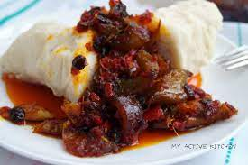
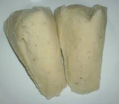

Ekuru Meal


Description
Ekuru is a meal native to the Yoruba people in Nigeria.
It is usually prepared with peeled beans.
It is similar to moin-moin as both are made from peeled black-eyed peas
or, occasionally, cowpeas.
Ingredients
- 3 Cups Black Eyed Beans or Brown
- 3 Cooking Spoons Palm Oil
- 1 Cup Dried Pepper (Ata Ijosi)
- 1 Red Bell Pepper (3, if you can’t source Dried Pepper (Ata Ijosi)
- 1 Scotch Bonnet
- 1.5 Medium Onion
- 2 Tablespoons Locust Beans (Iru)
Steps
- First soak and peel your Beans. Then blend with little water till semi-smooth, that’s not too smooth. Do not add too much water, your consistency should not be too thick nor too fluid, kind of in between. Then empty contents into a bowl.
- With a hand mixer, incorporate air into your Bean Batter by mixing for 10-15 minutes. Mix till very fluffy and frothy. If you haven’t got a hand mixer, you can use a wooden spoon or ladle, mix for 30 minutes. Traditionally, Ekuru batter is pounded in a mortar till fluffy.
- You’ll need to work your batter really well to achieve the signature Ekuru crumbly texture. If your batter isn’t fluffy enough, you’ll end up with a Moinmoin type texture or hard Ekuru, so, get mixing
- Scoop the batter into Banana leaves (Moinmoin leaves), Ramekins or Foil ame seal. Excuse my mess here, the leaves I got were way too small
- Steam till fully cooked, this should take roughly 30 minutes on medium heat.